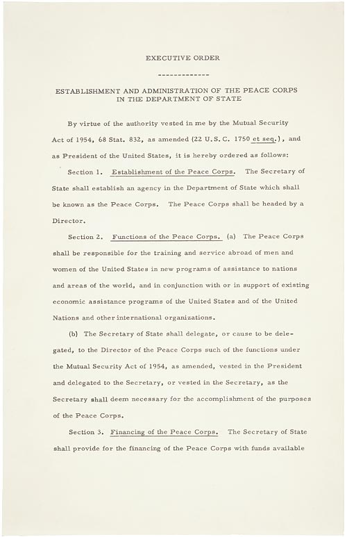

U.S. FOREIGN POLICY / WEEK 10
Vietnam and the limits of military power
- 1961–1968
- Dr. Murat Toman
U.S. FOREIGN POLICY / WEEK 10
The main idea
- Kennedy and Johnson expanded the tools available for Cold War competition. Vietnam showed how difficult it was to connect military action with a workable political outcome and lasting support at home.
- The draft, casualties, protest, and media scrutiny affected support for the war. Spending and attention devoted to Vietnam also competed with priorities at home. A strategy had to remain politically sustainable as well as militarily possible. Public consent could change as costs and expectations changed.
U.S. FOREIGN POLICY / WEEK 10
Where this week fits in history
| When | Selected event |
|---|---|
| 1956 | Suez crisis |
| 1964 | Tonkin Gulf Resolution |
| 1972 | Shanghai Communiqué |
U.S. FOREIGN POLICY / WEEK 10
History through a source

- This document is evidence of an official statement or decision. Its wording and appearance help us identify the source, but its promises still need to be checked against evidence of actions and results.
- Use the linked transcription or PDF to read the text. Ask who issued it, what it claims, and whose viewpoint is missing.
U.S. FOREIGN POLICY / WEEK 10
Key words explained
- Flexible response: A strategy that offers several levels and types of response rather than relying on one kind of threat.
- Counterinsurgency: Efforts to defeat an armed challenge to political authority, often combining military and civilian measures.
U.S. FOREIGN POLICY / WEEK 10
Key words explained
- Authorization: Formal permission to act.
- Political outcome: The change in authority, behavior, or relationships that a policy is intended to produce.
U.S. FOREIGN POLICY / WEEK 10
More military options did not guarantee better decisions
- Flexible response gave leaders options beyond relying mainly on nuclear threats. Conventional forces and counterinsurgency appeared to offer more ways to respond.
- Yet having a tool does not establish that it can achieve the desired result. Leaders still needed a realistic account of the political problem.
U.S. FOREIGN POLICY / WEEK 10
Development programs depended on how people experienced them
- The Peace Corps represented a form of engagement centered on service and development. Such work could help build relationships and trust.
- Attraction was not automatic: recipients could view outside programs differently from their sponsors. To assess influence, examine local experiences and reactions.
U.S. FOREIGN POLICY / WEEK 10
Vietnam was more than a test of military strength
- Vietnam’s conflict involved colonial history, nationalism, ideology, and competing claims to political authority. Military activity could change battlefield conditions without settling those political issues.
- Counting operations or resources therefore could not by itself establish success. Local actors’ choices were central.
U.S. FOREIGN POLICY / WEEK 10
The Tonkin resolution expanded presidential authority
- Congress gave broad support for presidential action through the Gulf of Tonkin Resolution. The decision raises questions about information, delegated authority, and oversight.
- Formal authorization matters, but it does not prove the underlying judgment was sound. Students should separate the legal grant of power from the expected political result.
U.S. FOREIGN POLICY / WEEK 10
Domestic support had limits
- The draft, casualties, protest, and media scrutiny affected support for the war. Spending and attention devoted to Vietnam also competed with priorities at home.
- A strategy had to remain politically sustainable as well as militarily possible. Public consent could change as costs and expectations changed.
U.S. FOREIGN POLICY / WEEK 10
Politics at home and abroad
- At home: The presidency, Congress, the draft, civil rights priorities, and protest shaped the war.
- Abroad: The United States sought to limit communist influence through force and development programs.
- The connection: domestic support and resources affect what leaders can promise abroad. International events can change domestic priorities.
U.S. FOREIGN POLICY / WEEK 10
How power worked
| Form of influence | How it operated in this week |
|---|---|
| Hard power | Bombing and conventional military operations sought to impose costs and change the balance of force. |
| Soft power | Service, exchange, and development could build trust, but attraction could not simply cancel the effects of coercion. |
- More instruments do not guarantee a coherent political strategy; attraction cannot simply cancel the costs of coercion.
U.S. FOREIGN POLICY / WEEK 10
A worked explanation
- Does carrying out more military operations necessarily mean a policy is succeeding?
- No. Success depends on whether those operations help produce the intended political result. Military activity and political progress are different measures.
- Why this matters: The draft, casualties, protest, and media scrutiny affected support for the war. Spending and attention devoted to Vietnam also competed with priorities at home. A strategy had to remain politically sustainable as well as militarily possible. Public consent could change as costs and expectations changed.
U.S. FOREIGN POLICY / WEEK 10
Practice with the documents
- Find an objective in the Peace Corps order.
- Find a power granted in the Tonkin resolution.
- For each, name one observable result that would show progress toward its goal. Avoid treating activity alone as success.
U.S. FOREIGN POLICY / WEEK 10
How to support an answer
- A claim is what you argue. Evidence is a specific passage, event, or finding that supports it. Explain the connection between them.
- Example structure: “The document claims ____. This suggests ____. It cannot by itself show ____.”
- A speech can establish what a speaker said. Evidence of actions and consequences is needed to judge whether the policy worked.
U.S. FOREIGN POLICY / WEEK 10
What to remember
- More instruments do not automatically create better political judgment.
- A soft-power program requires evidence of attraction, not merely benevolent intent.
- Operational indicators must connect to a plausible political outcome.
- Delegation, information quality, and sustained public consent are central to accountability.
U.S. FOREIGN POLICY / WEEK 10
Reading guide
- Executive Order Establishing the Peace Corps (1961) A document from the period. Use it to identify what officials claimed or authorized, then check other evidence for the consequences. External source page; access may vary.
- Tonkin Gulf Resolution (1964) A document from the period. Use it to identify what officials claimed or authorized, then check other evidence for the consequences. External source page; access may vary.
Executive Order Establishing the Peace Corps (1961) — External source page; access may vary.
Tonkin Gulf Resolution (1964) — External source page; access may vary.
U.S. FOREIGN POLICY / WEEK 10
Reading guide
- Gulf of Tonkin and Escalation, 1964 A retired historical background essay. Use it for context, and compare its account with scholarship and other perspectives. External source page; access may vary.
- From Colony to Superpower: U.S. Foreign Relations since 1776 A scholarly narrative companion for historical periods. Select the relevant period; no unverified page assignments are supplied. Publisher record; full text may require institutional access.
Gulf of Tonkin and Escalation, 1964 — External source page; access may vary.
Office of the Historian Milestones: retired series, retained online for historical reference; not a current-policy source.
From Colony to Superpower: U.S. Foreign Relations since 1776 — Publisher record; full text may require institutional access.
U.S. FOREIGN POLICY / WEEK 10
Reading guide
- The Global Cold War: Third World Interventions and the Making of Our Times Adds a global and intervention-centered perspective to Cold War analysis. Publisher record; full text may require institutional access.
- Cold War Civil Rights: Race and the Image of American Democracy Connects domestic racial politics and international credibility; especially useful for weeks 8–10. Publisher-distributed JSTOR record; full text may require institutional access.
The Global Cold War: Third World Interventions and the Making of Our Times — Publisher record; full text may require institutional access.
Cold War Civil Rights: Race and the Image of American Democracy — Publisher-distributed JSTOR record; full text may require institutional access.
U.S. FOREIGN POLICY / WEEK 10
Reading guide
- Soft Power A foundational theoretical reading, to be tested against historical cases rather than treated as a universal explanation. JSTOR article; full text may require institutional access.
Soft Power — JSTOR article; full text may require institutional access.
U.S. FOREIGN POLICY / WEEK 10
Video and audio guide
- June 26, 1963: “Ich bin ein Berliner” Speech Examine the language of alliance credibility and freedom in a divided city.
- Episode 1: The Cold War and the Threat of Communism Connect the geopolitical framing of containment to the beginnings of American involvement in Vietnam.
June 26, 1963: “Ich bin ein Berliner” Speech — Free provider page; external player may require consent or be region-dependent
Primary-source speech; video iframe, MP3 and transcript verified.
Episode 1: The Cold War and the Threat of Communism — Free provider page; external player may require consent or be region-dependent
September 30, 2026; John Lancaster with Barbara Gannon; institutional MP3 episode and teaching materials.
U.S. FOREIGN POLICY / WEEK 10
Using the sources carefully
- Linked readings and media offer particular viewpoints. Compare them with the lesson and other evidence. Some sources require institutional access.
- Media links and descriptions were checked when the course resources were prepared. Full playback was not tested.